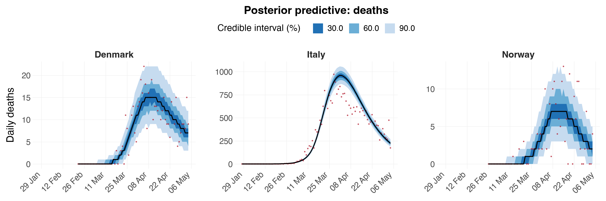
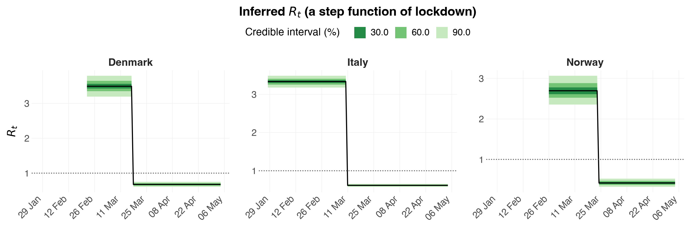
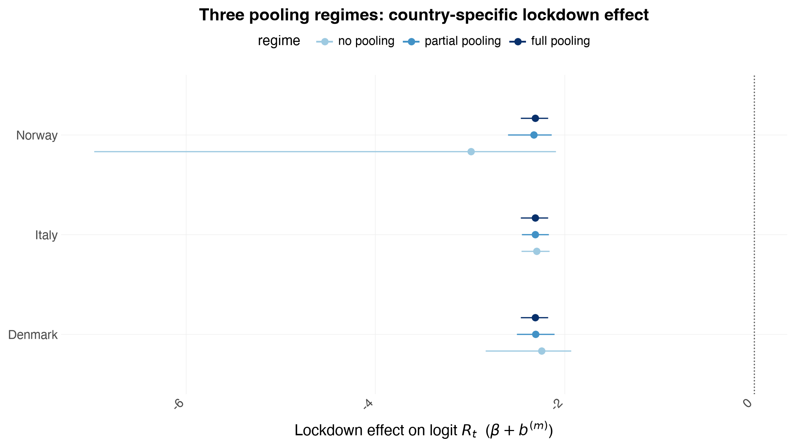
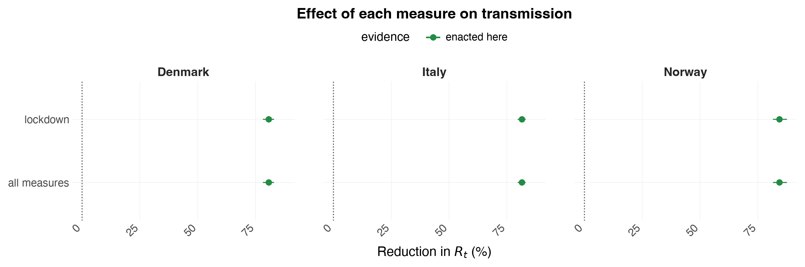

Partial Pooling¶
Python counterpart of the R vignette
partial-pooling.
This is a jupytext notebook stored as a plain .py file (percent format).
In the R package, parameters underlying the reproduction numbers are partially
pooled through a formula operator, (expr | factor) (or (expr || factor) for
independent effects). There is no formula mini-language in the Python port —
instead the pooling is expressed directly as hierarchical priors in the
PyMC model (epidemia.multilevel). This notebook explains the mapping and then
demonstrates the three regimes — no pooling, partial pooling, full pooling
— fitting each with MCMC (NUTS via nutpie), not Variational Bayes.
import numpy as np
import pandas as pd
import arviz as az
from plotnine import (aes, coord_flip, geom_hline, geom_pointrange, ggplot,
labs, position_dodge, scale_color_manual)
import epidemia as epi
from epidemia.plots import save_plot, theme_epidemia
From R formulas to hierarchical priors¶
A term (expr | factor) says: the columns of the model matrix parsed from
expr have separate effects per level of factor, drawn from a common
prior whose parameters are themselves estimated — this is what shares
information across levels. The table below maps the R formula idioms
(R(region, date) ~ ...) to what the Python model does.
| R formula R.H.S. | Pooling | In epidemia.multilevel |
|---|---|---|
1 + npi |
Full pooling | one global beta_npi, shared by all regions |
1 + npi:region |
No pooling | an independent effect per region, flat/independent priors |
1 + (0 + npi \| region) |
Partial pooling | beta_npi + b[region], with b[region] ~ N(0, sigma_npi) and sigma_npi estimated |
(npi \| region) |
Partial pooling, correlated intercept+slope | multivariate-normal region effects |
(npi \|\| region) |
Partial pooling, independent intercept+slope | b[region,k] ~ N(0, sigma_k), one sigma_k per column |
The key statistical difference:
- No pooling gives each region its own free parameter — noisy where data are scarce (early epidemic, small regions).
- Full pooling forces one shared value — hides genuine between-region variation.
- Partial pooling estimates a common distribution \(N(0, \sigma_k)\) and lets each region's effect deviate from the global mean by an amount shrunk toward zero; \(\sigma_k\) (estimated) controls how much. It interpolates between the two extremes and is what the Europe/COVID example uses.
The epidemia.multilevel model implements the last two rows: fixed global
effects beta_k plus partially-pooled region deviations b[region, k]
with b[region, k] ~ N(0, sigma_k) (the ||, independent-effects, case).
Selecting a regime¶
What separates the three regimes is what happens to \(\sigma_k\), the between-region SD:
| Regime | \(\sigma_k\) | MultilevelConfig |
|---|---|---|
| Partial pooling | estimated from the data | config.pooling("partial") (the default) |
| No pooling | fixed large — the prior barely constrains b[m], so each region is free |
config.pooling("none") |
| Full pooling | fixed ~0 — every region collapses onto the global \(\beta_k\) | config.pooling("full") |
Do not fake no-pooling by inflating the Gamma prior's shape (e.g.
sd_slope_shape=1e6). That puts \(\sigma_k\) itself near \(10^6\), sob = sigma * zlands around \(N(0, 10^6)\), \(\eta\) saturates thescaled_logit(6.5)link, and every \(R_t\) collapses to exactly 0 or 6.5. That is a broken prior, not an unpooled model.pooling("none")fixes \(\sigma_k\) at a large-but-sane value instead.
A worked demonstration¶
We use a small slice of the Europe/COVID data — three countries and a single
intervention (lockdown) — so the three regimes fit quickly and the shrinkage
is easy to see. (See the multilevel notebook for the full
11-country, 5-NPI analysis.)
The countries are chosen for their contrast in how much data they carry, which is what shrinkage responds to. Italy has ~29,000 deaths in the window; Denmark has ~500 and Norway ~200. Norway's own data pin its lockdown effect only loosely, so it is the country with the most to gain from borrowing strength — and the one to watch below.
Why not Sweden, the famous case? Sweden never locked down, so with
lockdownas the only covariate it would have nothing that ever switches on: its \(R_t\) would be pinned to a constant, and (since its epidemic was growing when the window opens) a constant above one. The model then could not reproduce Sweden's deaths falling at all, and that misfit would leak into every shared parameter. Sweden did suppress its epidemic, with softer measures — which is exactly why it belongs in the full 5-NPI multilevel analysis, where those measures exist, rather than in a one-covariate demo that cannot represent it. Adding a softer measure here would not rescue it either: the measures were enacted within days of each other, so a second covariate is collinear withlockdownand simply takes the effect over. Identifiability, not Sweden, is the lesson there.
ec = epi.europe_covid2()
subset = ec.data[ec.data["country"].isin(["Italy", "Norway", "Denmark"])].copy()
npis = ["lockdown"]
fit = epi.prepare_panel(subset, npis, seed_offset=30, death_threshold=10,
fit_until="2020-05-05")
print("regions:", fit.regions, "| days:", dict(zip(fit.regions, fit.lengths.tolist())))
print(f"\n{'country':9s}{'lockdown days':>16s}{'total deaths':>15s}")
for m, r in enumerate(fit.regions):
n = int(fit.lengths[m])
print(f"{r:9s}{int(fit.X[m, :n, 0].sum()):>10d} of {n:<4d}"
f"{int(fit.deaths[m, :n].sum()):>15d}")
print("\nAll three locked down, so the effect is identified in each. What differs is")
print("how much data each brings: Italy ~140x Norway. That is what pooling acts on.")
regions: ['Denmark', 'Italy', 'Norway'] | days: {'Denmark': 73, 'Italy': 98, 'Norway': 69}
country lockdown days total deaths
Denmark 48 of 73 484
Italy 55 of 98 28884
Norway 42 of 69 208
All three locked down, so the effect is identified in each. What differs is
how much data each brings: Italy ~140x Norway. That is what pooling acts on.
Partial pooling¶
The default MultilevelConfig partially pools the region effects. We estimate
the country-specific lockdown effect \(\beta + b^{(m)}\) for each country and the
between-country SD \(\sigma_\text{lockdown}\).
config = epi.MultilevelConfig(gen=ec.si, i2o=ec.inf2death, seed_days=6)
idata_pp = epi.fit_multilevel(fit, config.pooling("partial"), draws=500, tune=1000,
chains=4, seed=1)
print("divergences:", int(idata_pp.sample_stats["diverging"].sum()))
az.summary(idata_pp, var_names=["beta", "sd"])
[epidemia] compiling the log-density (numba backend)...
done in 33.8s
[epidemia] sampling 4 chains x (1000 tune + 500 draws)
Sampler Progress
Total Chains: 4
Active Chains: 0
Finished Chains: 4
Sampling for 45 seconds
Estimated Time to Completion: now
| Progress | Draws | Divergences | Step Size | Gradients/Draw |
|---|---|---|---|---|
| 1500 | 0 | 0.13 | 63 | |
| 1500 | 0 | 0.13 | 63 | |
| 1500 | 1 | 0.11 | 63 | |
| 1500 | 0 | 0.13 | 127 |
[epidemia] sampled in 45.5s
divergences: 1
/Users/smishra/Documents/GitHub/epidemia/python/src/epidemia/multilevel.py:649: UserWarning: 1 divergent transition. These bias the posterior and more draws will not help; raise target_accept above its current value or reparameterise.
/Users/smishra/Documents/GitHub/epidemia/python/src/epidemia/multilevel.py:649: UserWarning: Bulk ESS of 380 for sd[1] is 95 per chain, below the 100 per chain that keeps posterior summaries stable.
| mean | sd | hdi_3% | hdi_97% | mcse_mean | mcse_sd | ess_bulk | ess_tail | r_hat | |
|---|---|---|---|---|---|---|---|---|---|
| beta[lockdown] | -2.311 | 0.110 | -2.533 | -2.114 | 0.004 | 0.004 | 742.0 | 792.0 | 1.00 |
| sd[0] | 0.341 | 0.173 | 0.095 | 0.648 | 0.008 | 0.008 | 438.0 | 850.0 | 1.01 |
| sd[1] | 0.071 | 0.092 | 0.000 | 0.243 | 0.004 | 0.005 | 380.0 | 313.0 | 1.01 |
Does it actually fit?¶
Before reading any effect size, look at the fit itself — one panel per country.
Rt, infections and E_deaths are indexed by region in the posterior, so
passing the fit panel as data= places each country on its own dates
(country \(m\)'s column \(t\) is a different calendar day from country \(n\)'s) and
drops its padded tail. Every plot is written to figures/ by default.
[epidemia] saved figures/pp-deaths-ppc.png

epi.plots.plot_rt(idata_pp, data=fit, save="pp-rt",
title="Inferred $R_t$ (a step function of lockdown)")
[epidemia] saved figures/pp-rt.png

Each country steps down at its own lockdown date — the model has no random walk here, so \(R_t\) is a two-level step function by construction: one level before, one after. Each also starts from its own baseline \(R_0\), which is what the country-specific intercepts \(b^{(m)}_0\) buy you. Without them every country would be forced to share one baseline, and the lockdown effect would have to absorb the difference.
b0 = np.asarray(idata_pp.posterior["b0"].stack(s=("chain", "draw")))
R0 = 6.5 / (1.0 + np.exp(-b0))
print("Baseline R_0 per country (before lockdown):")
for m, r in enumerate(fit.regions):
print(f" {r:8s} {np.median(R0[m]):.2f} "
f"[{np.percentile(R0[m], 5):.2f}, {np.percentile(R0[m], 95):.2f}]")
Baseline R_0 per country (before lockdown):
Denmark 3.48 [3.19, 3.78]
Italy 3.33 [3.17, 3.48]
Norway 2.69 [2.35, 3.06]
No pooling, and full pooling¶
Now the two extremes, via config.pooling(...). "No pooling" fixes
\(\sigma_\text{lockdown}\) large so each country's b[m] is effectively free;
"full pooling" fixes it at ~0 so every country is forced onto the single
global \(\beta\).
def per_country_effect(idata):
"""Country-specific lockdown effect beta + b[region] from a pooled fit."""
post = idata.posterior
beta = np.asarray(post["beta"].sel(npi="lockdown").stack(s=("chain", "draw")))
return {
str(r): beta + np.asarray(
post["b"].sel(region=r, npi="lockdown").stack(s=("chain", "draw"))
)
for r in post.coords["region"].values
}
idata_np = epi.fit_multilevel(fit, config.pooling("none"), draws=500, tune=1000,
chains=4, seed=1)
idata_fp = epi.fit_multilevel(fit, config.pooling("full"), draws=500, tune=1000,
chains=4, seed=1)
eff = {
"partial pooling": per_country_effect(idata_pp),
"no pooling": per_country_effect(idata_np),
"full pooling": per_country_effect(idata_fp),
}
[epidemia] compiling the log-density (numba backend)...
done in 28.8s
[epidemia] sampling 4 chains x (1000 tune + 500 draws)
Sampler Progress
Total Chains: 4
Active Chains: 0
Finished Chains: 4
Sampling for a minute
Estimated Time to Completion: now
| Progress | Draws | Divergences | Step Size | Gradients/Draw |
|---|---|---|---|---|
| 1500 | 9 | 0.10 | 127 | |
| 1500 | 4 | 0.11 | 31 | |
| 1500 | 9 | 0.09 | 63 | |
| 1500 | 1 | 0.11 | 31 |
[epidemia] sampled in 71.7s
[epidemia] compiling the log-density (numba backend)...
/Users/smishra/Documents/GitHub/epidemia/python/src/epidemia/multilevel.py:649: UserWarning: 23 divergent transitions. These bias the posterior and more draws will not help; raise target_accept above its current value or reparameterise.
/Users/smishra/Documents/GitHub/epidemia/python/src/epidemia/multilevel.py:649: UserWarning: R-hat of 1.060 for sd_intercept exceeds 1.01, so the chains have not mixed.
/Users/smishra/Documents/GitHub/epidemia/python/src/epidemia/multilevel.py:649: UserWarning: Bulk ESS of 60 for sd_intercept is 15 per chain, below the 100 per chain that keeps posterior summaries stable.
done in 28.5s
[epidemia] sampling 4 chains x (1000 tune + 500 draws)
Sampler Progress
Total Chains: 4
Active Chains: 0
Finished Chains: 4
Sampling for 20 seconds
Estimated Time to Completion: now
| Progress | Draws | Divergences | Step Size | Gradients/Draw |
|---|---|---|---|---|
| 1500 | 0 | 0.17 | 15 | |
| 1500 | 2 | 0.23 | 15 | |
| 1500 | 0 | 0.18 | 31 | |
| 1500 | 1 | 0.21 | 31 |
[epidemia] sampled in 20.6s
/Users/smishra/Documents/GitHub/epidemia/python/src/epidemia/multilevel.py:649: UserWarning: 3 divergent transitions. These bias the posterior and more draws will not help; raise target_accept above its current value or reparameterise.
/Users/smishra/Documents/GitHub/epidemia/python/src/epidemia/multilevel.py:649: UserWarning: R-hat of 1.020 for z0[Denmark] exceeds 1.01, so the chains have not mixed.
/Users/smishra/Documents/GitHub/epidemia/python/src/epidemia/multilevel.py:649: UserWarning: Bulk ESS of 257 for sd_intercept is 64 per chain, below the 100 per chain that keeps posterior summaries stable.
Comparison¶
Plotting the country-specific lockdown effect under all three regimes shows shrinkage, and shows that it is selective. Watch Norway — 208 deaths against Italy's 28,884. Under no pooling its interval is wide, because that is honestly all its own data support. Under partial pooling it tightens and moves toward the others' consensus. Italy barely moves at all: it has enough data of its own that the shared prior has nothing to tell it.
That asymmetry is the point. Partial pooling is not an averaging-together; it lends precision where precision is missing and gets out of the way where it is not. Full pooling, by contrast, collapses all three to one number regardless of what any of them knew.
rows = [
{"country": country, "regime": regime,
"median": np.median(draws),
"lo": np.percentile(draws, 5), "hi": np.percentile(draws, 95)}
for regime, e in eff.items() for country, draws in e.items()
]
comp = pd.DataFrame(rows)
comp["regime"] = pd.Categorical(
comp["regime"], categories=["no pooling", "partial pooling", "full pooling"]
)
p = (
ggplot(comp, aes("country", "median", color="regime"))
+ geom_hline(yintercept=0.0, linetype="dotted", color="#555555")
+ geom_pointrange(aes(ymin="lo", ymax="hi"), position=position_dodge(width=0.5))
+ coord_flip()
# Sequential, not a hue wheel: the three regimes are ordered (none ->
# partial -> full), so they should read as an ordered ramp.
+ scale_color_manual(
values={"no pooling": "#9ecae1", "partial pooling": "#4292c6",
"full pooling": "#08306b"}, name="")
+ labs(x="", y="Lockdown effect on logit $R_t$ ($\\beta + b^{(m)}$)",
title="Three pooling regimes: country-specific lockdown effect")
+ theme_epidemia()
)
save_plot(p, "pooling-comparison")
p
[epidemia] saved figures/pooling-comparison.png

print(comp.pivot(index="country", columns="regime", values="median").round(2).to_string())
print("\ninterval width (95% - 5%):")
w = comp.assign(width=comp.hi - comp.lo)
print(w.pivot(index="country", columns="regime", values="width").round(2).to_string())
print("\nbetween-country SD sigma_lockdown under partial pooling:")
sd = np.asarray(idata_pp.posterior["sd"].stack(s=("chain", "draw")))[1]
print(f" median {np.median(sd):.3f} 90% CI [{np.percentile(sd, 5):.3f}, "
f"{np.percentile(sd, 95):.3f}]")
print(" (small => the data see little genuine between-country variation, so"
"\n partial pooling shrinks nearly all the way to full pooling)")
regime no pooling partial pooling full pooling
country
Denmark -2.24 -2.31 -2.31
Italy -2.29 -2.31 -2.31
Norway -2.99 -2.32 -2.31
interval width (95% - 5%):
regime no pooling partial pooling full pooling
country
Denmark 0.90 0.40 0.29
Italy 0.30 0.28 0.29
Norway 4.88 0.46 0.29
between-country SD sigma_lockdown under partial pooling:
median 0.036 90% CI [0.000, 0.264]
(small => the data see little genuine between-country variation, so
partial pooling shrinks nearly all the way to full pooling)
What the effect means, in percent¶
A coefficient of \(-2.3\) on the logit scale is hard to feel. epi.effect_table
turns it into the percent by which lockdown cut transmission, by counterfactual
— comparing \(6.5\,\mathrm{sigmoid}(b_0^{(m)})\) with
\(6.5\,\mathrm{sigmoid}(b_0^{(m)} + \beta + b^{(m)})\) on every posterior draw.
Note the percentages differ across countries even though the coefficients are nearly identical after shrinkage. That is not a bug: the link is
scaled_logit(6.5), not a log link, so the same coefficient buys a bigger percentage where \(R_0\) is lower. It is also why \(1 - e^{\beta}\) — the log-link shortcut — is the wrong conversion here and overstates the effect.
tab = epi.effect_table(idata_pp, config, data=fit)
print(tab.to_string(index=False, float_format=lambda x: f"{x:7.2f}"))
print("\n(Every row here is flagged enacted=True: all three countries locked down,")
print("so each percentage is a measured effect. Where a region never used a measure")
print("the flag turns False and the percentage is a counterfactual from the prior —")
print("see Sweden in the multilevel notebook.)")
region term kind enacted median lo hi
Denmark R_0 (no measures) R None 3.48 3.19 3.78
Denmark lockdown pct True 80.67 78.12 82.90
Denmark all measures pct True 80.67 78.12 82.90
Denmark R_t (all measures) R True 0.67 0.61 0.75
Italy R_0 (no measures) R None 3.33 3.17 3.48
Italy lockdown pct True 81.58 79.74 83.22
Italy all measures pct True 81.58 79.74 83.22
Italy R_t (all measures) R True 0.61 0.58 0.65
Norway R_0 (no measures) R None 2.69 2.35 3.06
Norway lockdown pct True 84.38 81.51 87.61
Norway all measures pct True 84.38 81.51 87.61
Norway R_t (all measures) R True 0.42 0.32 0.52
(Every row here is flagged enacted=True: all three countries locked down,
so each percentage is a measured effect. Where a region never used a measure
the flag turns False and the percentage is a counterfactual from the prior —
see Sweden in the multilevel notebook.)
[epidemia] saved figures/pp-percent-effects.png

The partially-pooled intervals sit between the two extremes: narrower than
no-pooling because information is shared through the common prior
\(N(0, \sigma_\text{lockdown})\), but — unlike full pooling — still able to
differ from one another if the data insist. This is exactly the behaviour the
(lockdown || country) term encodes in R, and \(\sigma_\text{lockdown}\) is the
dial: the smaller the data say it is, the closer partial pooling sits to full
pooling.
Reading the output¶
A caution that matters as soon as there is more than one covariate: the global
\(\beta_k\) printed by az.summary is not "the effect in country \(m\)" — that
is \(\beta_k + b^{(m)}_k\), which per_country_effect (or
epi.plots.plot_region_effects) computes. And with several collinear
covariates, a single \(\beta_k\) whose interval covers zero usually means "not
separately identifiable from the others", not "this measure did nothing". The
multilevel notebook works through that case.
References¶
- Bates, D. et al. (2015). Fitting Linear Mixed-Effects Models Using lme4.
- Flaxman, S. et al. (2020). Estimating the effects of non-pharmaceutical interventions on COVID-19 in Europe.